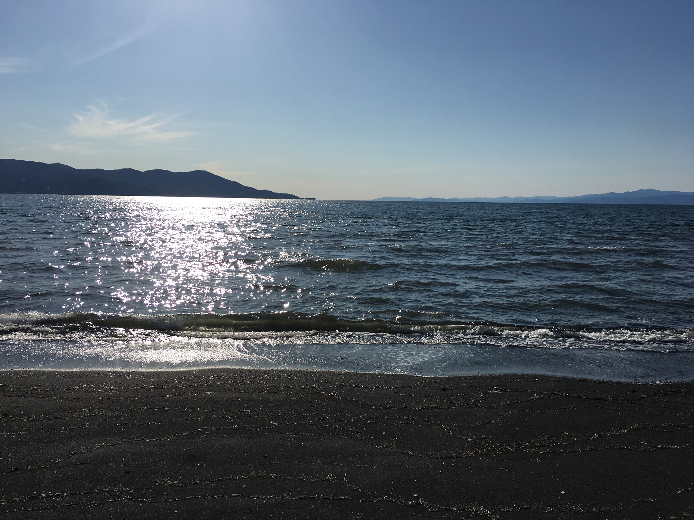
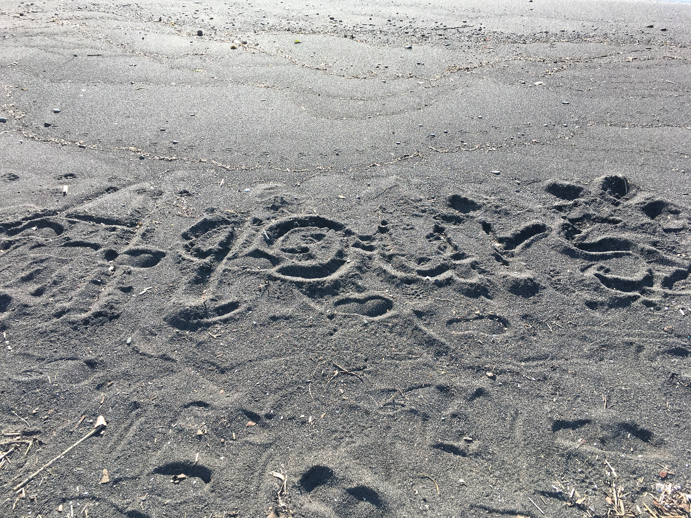

Interest
Composed by Anime, Music, Traveling, Video Game and Reading

Meet
They're both convinced
That a sudden passion joined them.
Such certainty is beautiful,
But uncertainty is more beautiful still.
- Wislawa Szymborska, Polish poet, essayist and translator, b.1923

Characteristic
Aquarius, Quiet, Listener, Carefulness, Freedom, Independence